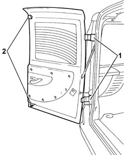
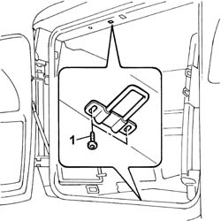

7020E04 rear swinging door - adapt flaps/seals for centring and profiling
- Path
- Procedures > 70 FITTINGS > 7020 LOAD CARRYING COMPARTMENT DOORS > 7020E rear swinging door > 7020E04 rear swinging door - adapt flaps/seals for centring and profiling
- Kind
- repair procedure (removal / refitting; the operation number is the code)
- Applies to
- all engines; all production periods
- Interactive page
- https://sloeber94.github.io/elrnDB-fDbl/en/#/2585076
Applies to: all engines; all production periods
Op. 7040B22 LUGGAGE COMPARTMENT/LOAD PLATFORM MOULDING - R+R
1. Slacken the top and bottom door hinge bolts, door side.
2. Slacken the top and bottom door lock bolts.

Applies to: all engines; all production periods
1. Slacken the top and bottom door striker bolts.

Applies to: all engines; all production periods
Adjust and centre the door, using the hinge slots, door side.
Check that the door is aligned with the outer profile and that the top and bottom locks line up with their strikers, using the slotted holes on the locks and strikers.
After adjustment, tighten the bolts securing the hinges, locks and strikers to the specified torque.
 | Fastening | Component | Ø | Value (daNm) |
|---|---|---|---|---|
- | Bolt | REAR SWING DOOR HINGES. | M8 | (door) 2.4 |
Op. 7040B22 LUGGAGE COMPARTMENT/LOAD PLATFORM MOULDING - R+R